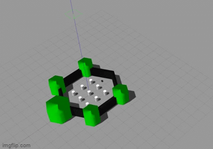

Launch File
Pour commencer nous allons lanver une simulation gazebo dans le monde trurtlebot word 3
<launch>
<arg name="model" default="$(env TURTLEBOT3_MODEL)" doc="model type [burger, waffle, waffle_pi]"/>
<arg name="x_pos" default="-2.0"/>
<arg name="y_pos" default="-0.5"/>
<arg name="z_pos" default="0.0"/>
Ici, le launch file attend un argument “model” qui nous laisse le choix entre different modele de robot
[burger, waffle, waffle_pi],
ces modèles sont present dans ls fichier models
Les trois arguments suivatn x_pos, y_pos, et z_pos sont la position ou va apparaitre notre robot dans la map
<include file="$(find gazebo_ros)/launch/empty_world.launch">
<arg name="world_name" value="$(find turtlebot3_gazebo)/worlds/turtlebot3_world.world"/>
<arg name="paused" value="false"/>
<arg name="use_sim_time" value="true"/>
<arg name="gui" value="true"/>
<arg name="headless" value="false"/>
<arg name="debug" value="false"/>
</include>
On inclu le launch file empty_word.launch qui va demarer une simulation, ce launch file prend plusieur argument d’entrée comme la map utilisé, “word_name” ici la valeur de notre argument va chercher un model monde present dans le fichier wordls. l’agument “gui” mis a “true” permet de lancer l’interface graphique de la simulation
<param name="robot_description" command="$(find xacro)/xacro --inorder $(find turtlebot3_description)/urdf/turtlebot3_$(arg model).urdf.xacro" />
<node pkg="gazebo_ros" type="spawn_model" name="spawn_urdf" args="-urdf -model turtlebot3_$(arg model) -x $(arg x_pos) -y $(arg y_pos) -z $(arg z_pos) -param robot_description" />
</launch>
Nous lançons le node spawn_urdf du packet gazebo_ros qui prend comme parametre “robot description” , ce paramètre pointe vers l’urdf de notre robot ici, si nous choisision le robot burger, l’urdf sera : turtlebot3_burger.urdf.xacro
Ce fichier se trouve dans turtlebo3/turtlebot3_description/urdf , il est la description du robot au format URDF, dans l’entete du fichier nous avons deux includes important:
Lancement
Nous allons lancer la simulation:
On choisi le modèle du robot que l’on souhaite parmis la liste suivant [burger, waffle, waffle_pi]
export TURTLEBOT3_MODEL=burger
On lance la simulation:
roslaunch turtlebot3_gazebo turtlebot3_world.launch
Voici le résultsat du gui Gazeo
